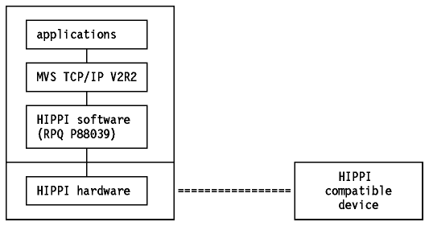
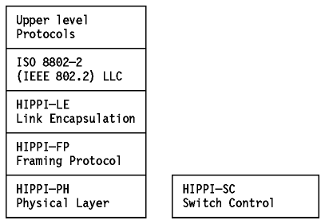

Table of Contents
Table of Contents  Addressing
Particularities
Addressing
ParticularitiesTable of Contents Addressing
Particularities
The IBM High-Performance Parallel Interface (HIPPI) is an 800 Mbps data transfer device that operates in a variety of high-speed computer environments. It is an implementation of the ANSI X3.183-1991 High-Performance Parallel Interface (HIPPI-PH) standard.
The IBM HIPPI can attach devices that comply with the ANSI standard to selected members of the IBM Enterprise System/3090 (ES/3090) and IBM Enterprise System/9000 (ES/9000) family of computers. Some examples of these devices are high-resolution real-time visualization devices, file servers, workstations or supercomputers.
One of the following hardware RPQs is required for the HIPPI-supported ES/3090 or ES/9000 family of computers: 8P1347, 8P1348, 8P1353 or 8P1354.
The HIPPI software (RPQ P88039, program number 5799-DKW) makes the function of the HIPPI available to the HIPPI application programs. MVS TCP/IP V3R1 is one such program.
The IBM HIPPI software actually provides both a high-level, multiplexing interface and a low-level, exclusive-use interface. Basically, the high-level multiplexed interface gives several applications the ability to use HIPPI at the same time. This interface complies with the ANSI HIPPI-FP framing protocol. The low-level, exclusive-use interface allows only a single application to establish an association with it.
Note: MVS TCP/IP V3R1 was implemented to use the low-level interface. This means that other software may not use HIPPI while MVS TCP/IP is using it.
Please see Figure - IBM HIPPI and MVS
TCP/IP for an overview of the relationship of the various components.

Figure: IBM HIPPI and MVS TCP/IP
The ANSI X3T9.3 HIPPI working group drafted four standards covering:
Please see Figure - Relationship of ANSI
HIPPI Draft Standards for an overview of the relationship of the various
ANSI draft standards.

Figure: Relationship of ANSI HIPPI Draft Standards
The Internet-Draft "IP and ARP on HIPPI" by A. Nicholson, June 1992, describes the HIPPI interface between a host and a crosspoint switch that complies with the HIPPI-SC draft standard. This is a working draft which is intended to become an Internet standard in the future.
Note: The HIPPI-SC switches are devices which allow a single HIPPI device to switch between multiple HIPPI devices without involving protocols above the HIPPI-PH layer.
The current IBM HIPPI does not support two items in the ANSI draft standard X3.183-1991 (HIPPI-PH):
 CTC
(Channel To Channel)
CTC
(Channel To Channel)